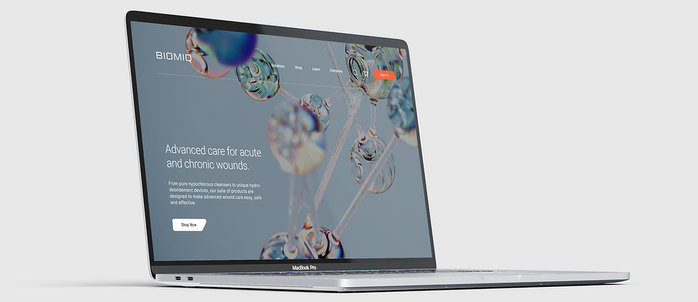
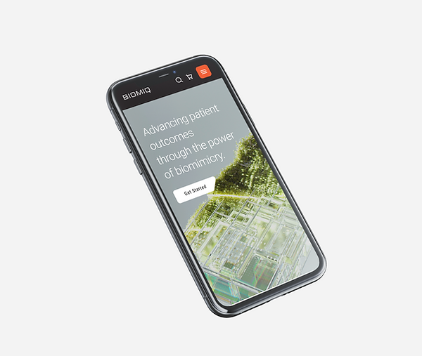
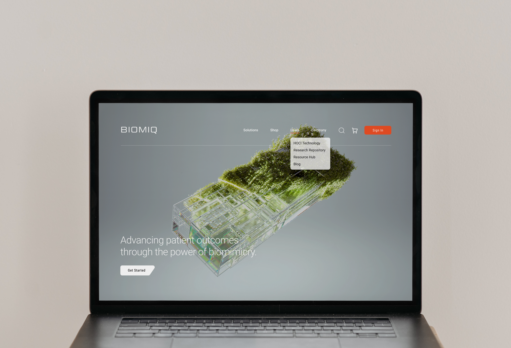
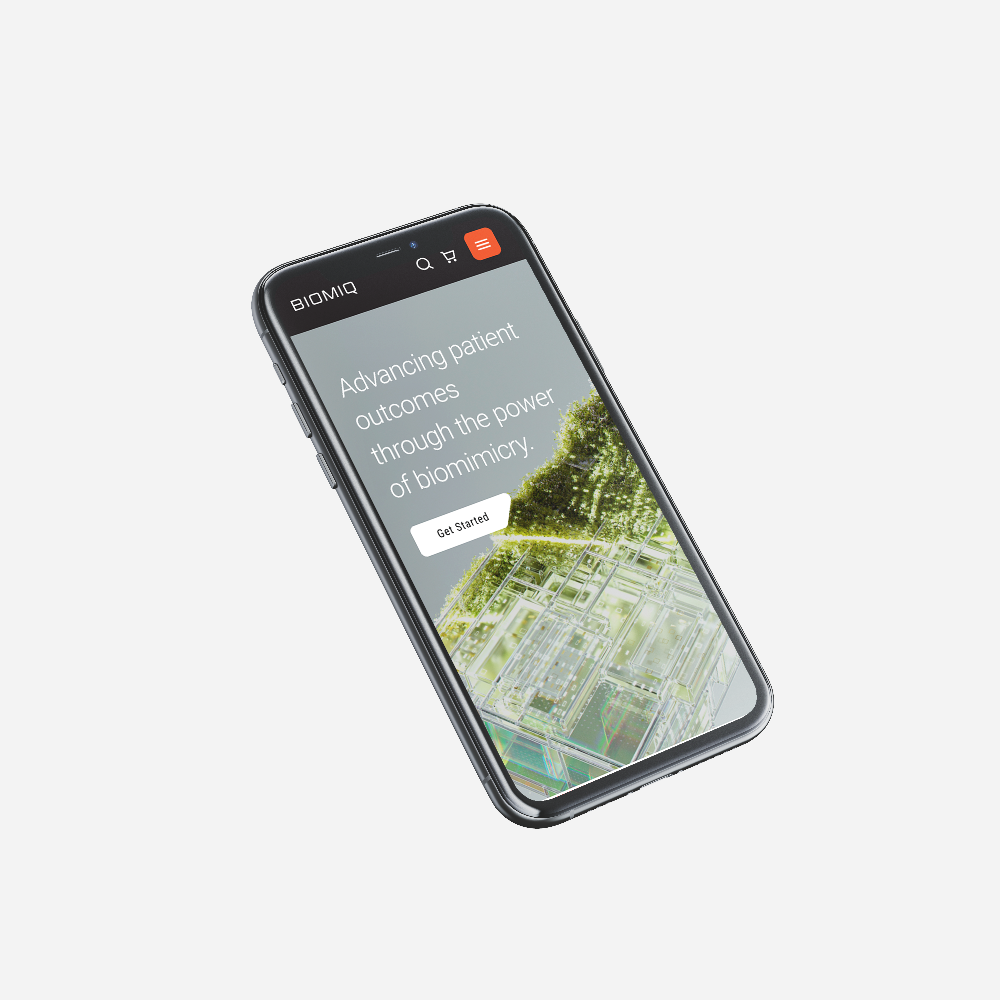
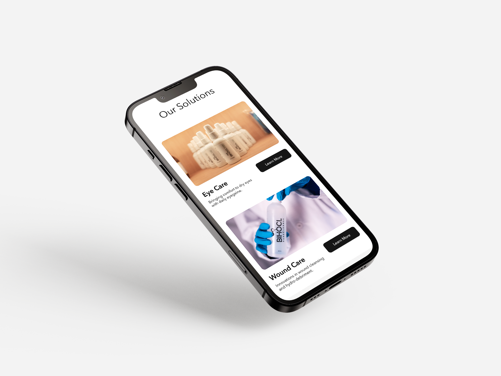
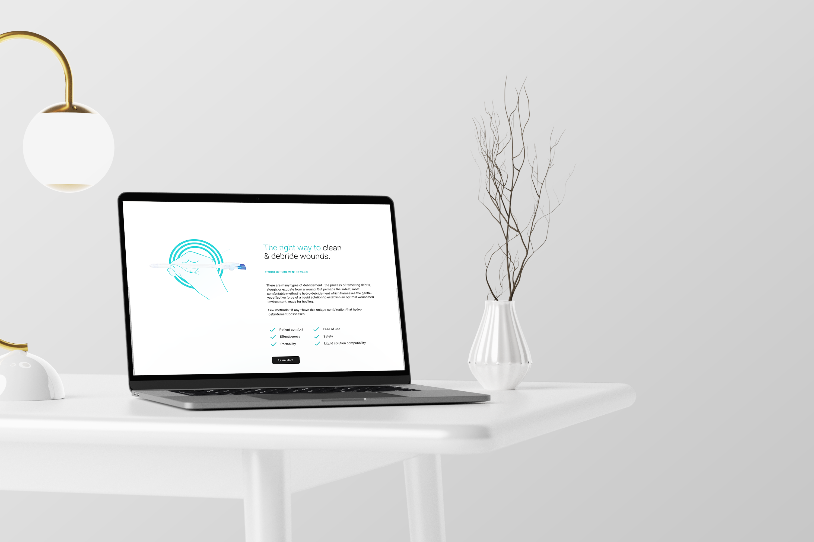
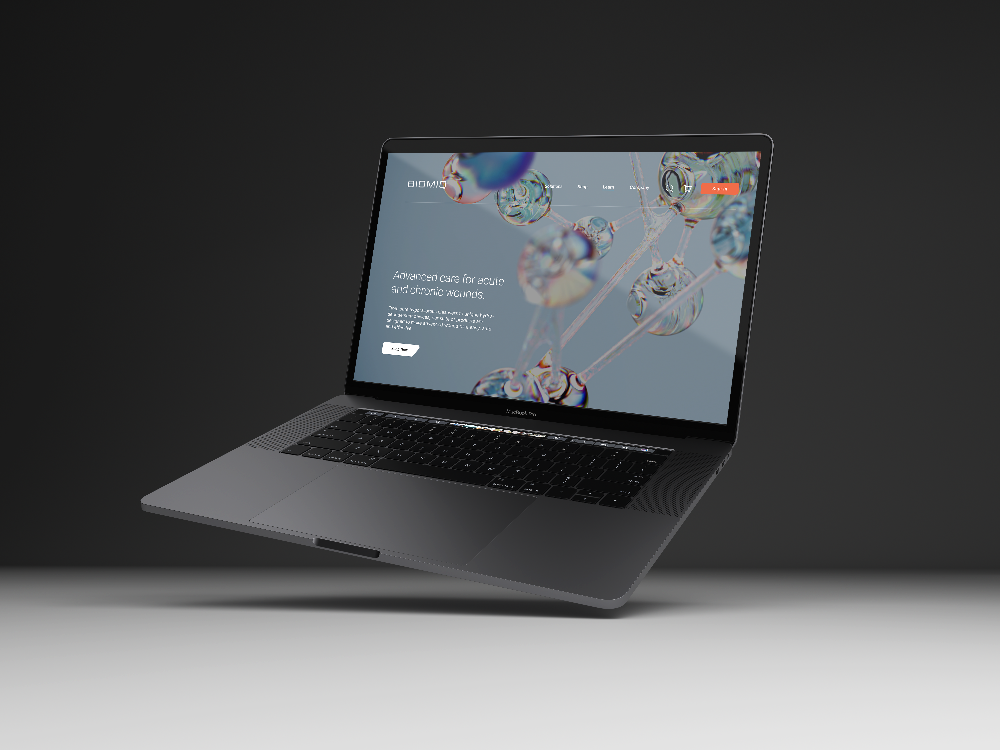
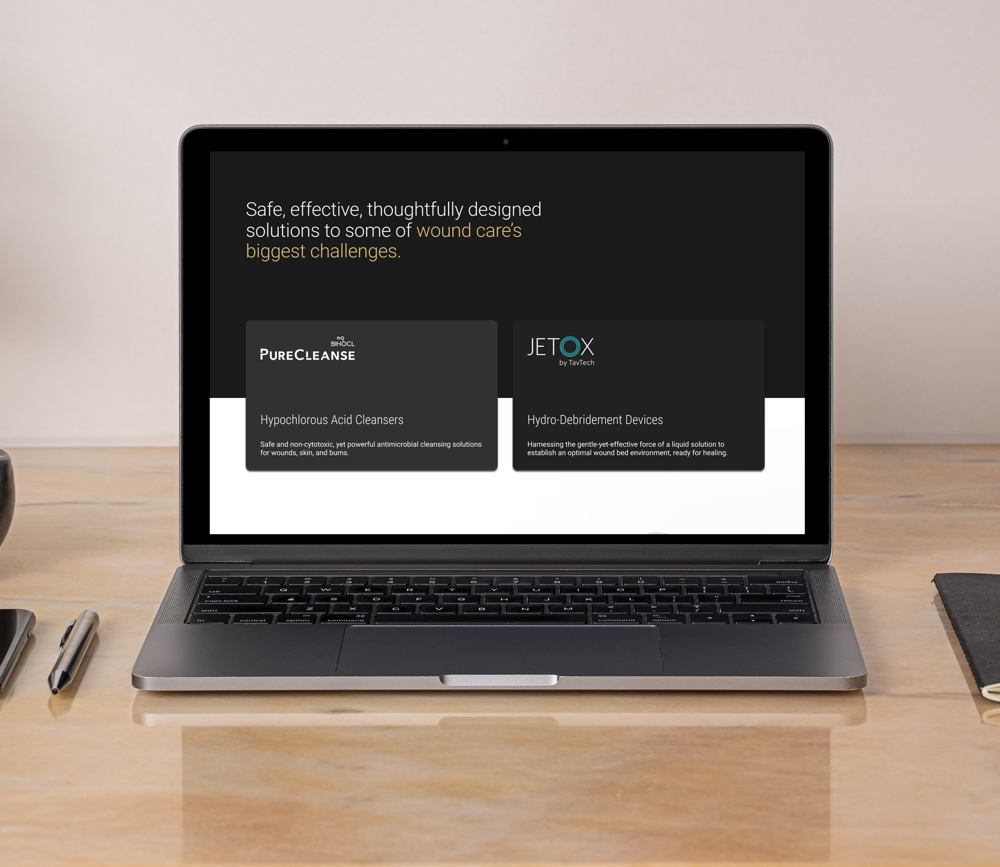

Biomiq
The Biomiq project is a comprehensive redesign and rebrand of Sterasure. The in-depth quantitative and qualitative research guided the UX principles and design of the project.
From sterile to human: A rebrand with purpose
Two websites, they faced a common but critical challenge. The main site targeted consumers (Sterasure.com), while BIHOCL.com served B2B customers. The overlap caused confusion, diluted the brand, and slowed conversions.
Our mission was clear. Unify, simplify, and humanize the brand experience. We aimed to create a digital experience that feels intuitive and approachable drawing inspiration from biomimicry to design systems that are efficient, adaptive, and naturally easy to use.
Role
-
Lead Product Designer: Led scrums, collaborated with cross-functional teams, facilitated workshops, mentored, and served as a lead for rebrand
-
Full-Stack Product Design: Designed visuals, user experiences, prototypes, and motion; crafted all design elements unless sourced from the Design System. As well as conducted all research involved
-
Cross-functional collaboration: Partnered with teams (Front end Developers, Back end developers, Business and Stakeholders)

The problem: 2 websites, one purpose
Our discovery phase revealed a fundamental mismatch:
The website’s content strategy focused on businesses, but its architecture and flows catered to consumers. The company also had a second website dedicated to only businesses, with some products appearing on both sites
We needed to merge two separate worlds (B2B and B2C) into one cohesive experience.
Research as a foundation for design
All major design decisons were built on research insights
-
User Testing: 20 participants (ages 18–40) shared frustrations with navigation and unclear product categorization.
-
Competitor Analysis: Brands like Apple and Microsoft inspired clear segmentation and navigation models.
-
A/B Testing: Which navigation option did partipants want to use the most?
-
Accessibility Audits: Highlighted the need for larger fonts, contrast adjustments, and keyboard navigation improvements.
These insights shaped a new information architecture that cut friction, clarified hierarchy, and created distinct pathways for each audience without clutter.
Design philosophy
1. Humanized:
- Warmer tones, approachable visuals, empathetic messaging
2. Clear & Simple:
– Simplified navigation, consistent layouts, minimal cognitive load
3. Inclusive:
– WCAG-compliant accessibility and responsive performance across all devices
4. Timely:
- Test and iterate on cross-functional and vertical-supported UI and components using Figma and Atomic design principles.
The solution: let's merge both websites







1. Interactive menu:
A/B Testing used to determine design
2. Homepage redesign:
Informational hierarchy experiment to uncover how to structure the page
3. Wound care redesign:
A/B Testing used to determine design
Design, test, design, test, design, test, until it’s perfect.
- Multiple rounds of usability testing and QA across browsers and devices
- Prototypes validated with real users before handoff
- Comprehensive documentation outlined component behavior, accessibility specs, and visual states
- Post-launch, analytics and heatmaps guided continuous optimization
The Results
Impact at a Glance
| Metric |
Post-Redesign Growth |
| Website Traffic |
+25–35% overall (+30% organic) |
| Session Duration |
+15–30% increase |
| Page Views per Session |
+20–30% increase |
| Conversion Rates |
+15–25% B2C / +20% B2B |
| Customer Satisfaction |
+25% CSAT / +15% NPS |
| Mobile Performance |
+25% more traffic / +20% conversions |
| Retention & Revenue |
+15% repeat visits / +20% revenue growth |
These numbers confirmed that great design doesn’t just look good—it performs.
My reflection
Overall, I’m proud of how this project came together, it was validated quickly and delivered a beautiful, effective result
It repositioned the company as a forward-thinking leader in healthcare, speaking to both professionals and patients with equal clarity, while increasing almost every metric on the board.